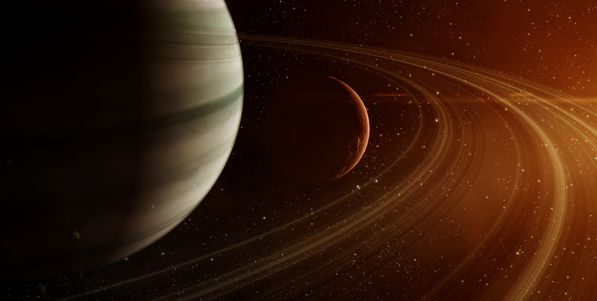

Infinite Worlds,
Infinite
Possibilities
Infinite
Possibilities



We launch daring research expeditions into deep and wormhole space, pioneering the exploration of unknown realms. From uncovering new elements to testing cutting-edge technologies and developing advanced subsystems, our missions push the boundaries of scientific discovery in the cosmos, with the goal of furthering humanity's progress Learn More
We operate state-of-the-art facilities in the Stacmon system to support our cutting-edge research endeavors, collaborations with governments and institutions, and occasional public events, providing insights into the mysteries of deep and wormhole space. We also operate freeport stations in wormhole and deep space to support individual and public research operations Learn More
The Sanctuary super-fleet, launched in colaboration with the
Trans-Supercluster Research and Expeditions Committee (TSREC), spearheads Foundation operations with its
flagship supercarrier and support dreadnoughts and carriers.
The "Astral Network," the Foundation's inaugural public project,
revolutionized interstellar logistics, fostering trade and tourism across systems. Its success wildly
surpassed TSREC's expectations, enhancing interstellar connectivity and overall quality-of-life.
Enhancing security in dangerous space, the Veil Network deploys advanced
subspace detection probes and freeport stations in deep space and wormhole regions, ensuring swift and
coordinated defensive responses against threats.